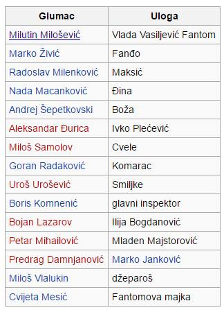
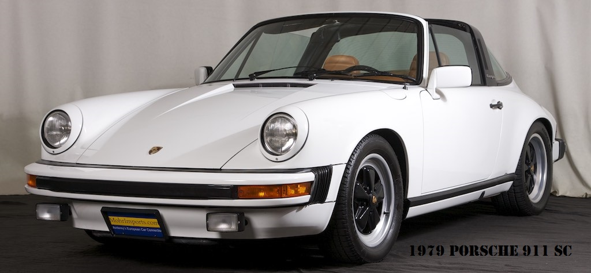

Radnja filma
Film govori o Vladi Vasiljeviću, Beograđaninu koji je 1979. godine ukrao beli „Porše-Targa 911-s“, a zatim desetak večeri izluđivao miliciju svojim vratolomnim vožnjama ka Slaviji. Za vreme službenog boravka predsednika Tita na Kubi 1979. godine, pažnja prestonice bila je usmerena ka „fantomu iz belog poršea“.
Misteriozni vozač koji je u ukradenom automobilu jurio trgom Slavija praveći u ponoćnim satima pravi spektakl, neprekidno je uspevao da utekne miliciji. Preko radija javno je pozivao policiju da ga uhvati, što je prvi opozicioni čin u posleratnoj Jugoslaviji. Više desetina hiljada ljudi izlazilo je na ulice da ga podrži.
Uloge

Zanimljivosti
Glumac Milutin Milošević koji u filmu igra Vladu Vasiljevića Fantoma ne izgovara ni jednu reč. Porše koji je korišćen u filmu je plave boje pa je za potrebe filma prelepljen belom folijom. Proizveden je 1986. godine i trenutno se nalazi u Muzeju automobila u Beogradu.
Fotografija Porše 911
